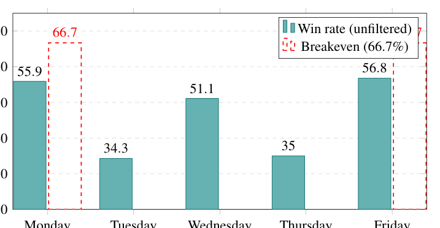
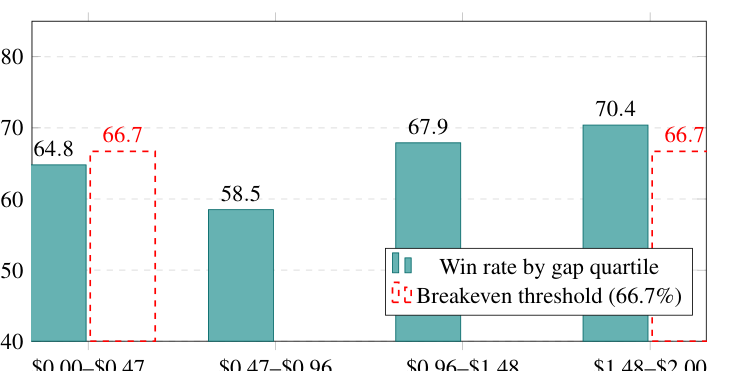
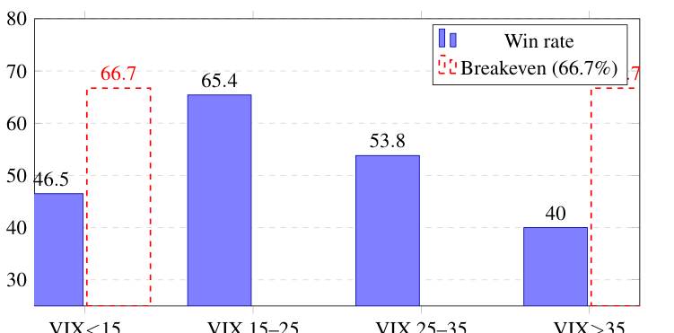
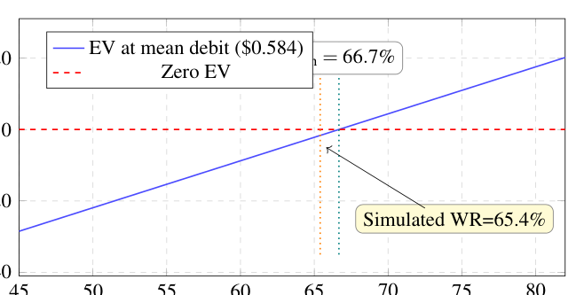

Regime-Conditional Alpha in SPY 0DTE ORB จากศูนย์
เปเปอร์นี้ไม่ได้บอกว่า “ORB 0DTE ทำเงินง่าย” แต่ถามว่า ถ้าเอา opening range breakout ไปเล่นเป็น SPY 0DTE debit vertical spread แล้วกรองวัน, กรอง VIX, เลี่ยงวันข่าว, และเลือก strike ให้ดี ยังเหลือ edge จริงไหม
คำตอบสั้นของ paper
edge ถ้ามี ก็อยู่ “ริมขอบ” มาก ไม่ได้แข็งแรงพอให้เทรดแบบไม่ระวังได้ ผล simulation หลังกรองแล้วชนะ 65.4% แต่โครงสร้าง take profit 25% และ stop loss 50% ต้องชนะ 66.7% จึงจะคุ้ม ดังนั้น paper สรุปว่า strategy นี้อาจ viable เฉพาะตอนเงื่อนไขดีมากและ execution ดีมาก แต่ไม่ใช่เครื่องพิมพ์เงิน
1. เริ่มจากศูนย์: เรากำลังเทรดอะไร
SPY
ETF ที่ตามดัชนี S&P 500 ถ้า SPY ขึ้น แปลว่าตลาดหุ้นใหญ่ของสหรัฐโดยรวมขึ้น
0DTE
option ที่หมดอายุวันนี้ เวลาเหลือน้อยมาก ถ้าราคาไม่ไปทางที่ต้องการเร็ว premium จะละลายเร็ว
Call / Put
call ได้ประโยชน์เมื่อ SPY ขึ้น ส่วน put ได้ประโยชน์เมื่อ SPY ลง
Debit vertical spread
ซื้อ option ตัวหนึ่งและขาย option อีกตัวที่ strike ไกลกว่า จ่ายเงินสุทธิเล็กลง และรู้ maximum loss ตั้งแต่เข้าเทรด
ตัวอย่างง่าย: ถ้า SPY breakout ขึ้นแถว 572.35 paper จะมอง bull call spread เช่นซื้อ call strike 573 และขาย call strike 575 ที่หมดอายุวันเดียวกัน ถ้าจ่ายสุทธิ 0.61 ดอลลาร์ต่อ share หนึ่ง contract มี 100 shares จึงใช้เงิน 61 ดอลลาร์ต่อ contract
2. ORB คือสัญญาณแบบไหน
ORB ย่อจาก Opening Range Breakout แนวคิดคือ 5 นาทีแรกหลังตลาดเปิดเป็นช่วงที่ตลาดย่อยข่าวข้ามคืน ถ้าหลังจากนั้น SPY ทะลุ high ของช่วง 9:30-9:35 AM อาจแปลว่าฝั่งซื้อมีแรงต่อ ถ้าหลุด low อาจแปลว่าฝั่งขายมีแรงต่อ
3. ทำไมต้องกรอง ไม่ใช่เห็น breakout แล้วเข้าเลย
paper พบว่า raw ORB signal ยังไม่พอ เพราะ payoff ของ strategy นี้เสียมากกว่ากำไรต่อครั้ง: ชนะได้ +25% แต่แพ้เสีย -50% แปลว่าต้องชนะ 2 ใน 3 ครั้ง หรือ 66.7% แค่คุ้มทุน
| สิ่งที่ filter ทำ | เหตุผลแบบคนเริ่มจากศูนย์ |
|---|---|
| เทรดเฉพาะ Monday, Wednesday, Friday | simulation ตั้งต้นให้สามวันนี้มีโอกาสชนะดีกว่า Tuesday/Thursday |
| VIX ต้องอยู่ 15-25 | VIX ต่ำเกินไป ราคาไม่วิ่งพอ; สูงเกินไป fakeout เยอะและ option แพง |
| เลี่ยง FOMC, CPI, NFP, Fed speech | วันข่าวใหญ่ราคาแกว่งผิดทางง่าย breakout อาจไม่ใช่ trend จริง |

4. แกนสำคัญ: strike gap
strike gap คือระยะจากราคา breakout ไปถึง long strike ที่เลือก เช่น SPY breakout ที่ 572.35 และ long call strike คือ 573 gap คือ 0.65 ดอลลาร์
gap เล็กเกินไป option แพงกว่า แต่ตอบสนองต่อราคาเร็วกว่า; gap ใหญ่ขึ้น option ถูกกว่า แต่ต้องให้ราคาไปต่อพอสมควรจึงจะกำไร Paper พบว่าช่วง gap ที่ไกลขึ้น โดยเฉพาะมากกว่า 0.96 ดอลลาร์ ทำ EV ดีกว่าใน simulation

| Gap range | Win rate | EV ต่อ trade | อ่านว่าอะไร |
|---|---|---|---|
| 0.00-0.47 | 64.8% | -2.64 ดอลลาร์ | ใกล้ ATM แต่ยังต่ำกว่า breakeven |
| 0.47-0.96 | 58.5% | -11.11 ดอลลาร์ | paper ให้ระวังมากที่สุด |
| 0.96-1.48 | 67.9% | +1.61 ดอลลาร์ | เริ่มเหนือ breakeven เล็กน้อย |
| 1.48-2.00 | 70.4% | +4.40 ดอลลาร์ | ดีที่สุดใน simulation แต่ยังต้องระวัง sample เล็ก |
5. ผลหลัก: หลัง filter แล้วยังไม่สบาย
หลังใช้ filter ครบ เหลือ 214 trades จาก 756 วัน ได้ win rate 65.4% ช่วงความไม่แน่นอน 95% อยู่ที่ 58.8%-71.5% จุดอ่านคือ true win rate อาจต่ำกว่าคุ้มทุน หรืออาจสูงกว่าคุ้มทุนก็ได้ ข้อมูลยังไม่ได้ทำให้มั่นใจว่า edge แข็งแรง

จุดที่ต้องจำ
การที่ win rate 65.4% ต่ำกว่า breakeven 66.7% ไม่ได้แปลว่า paper ล้มเหลว แต่แปลว่าคำตอบของ paper คือ “edge อยู่ใกล้ศูนย์มาก” ถ้า fill แย่, spread กว้าง, เข้าไม่ทัน, หรือ market regime เปลี่ยน ผลลัพธ์อาจกลับเป็นลบทันที
6. บัญชี $1,500 เสี่ยงอย่างไร
paper ใช้ setup มาตรฐาน 3 contracts, mean debit 0.584 ดอลลาร์ ต่อ spread ใช้เงินประมาณ 58.40 ดอลลาร์ต่อ contract หรือ 175 ดอลลาร์สำหรับ 3 contracts ถ้า stop loss 50% แพ้ครั้งละประมาณ 87.60 ดอลลาร์ คิดเป็น 5.8% ของบัญชี 1,500 ดอลลาร์ สูงมากสำหรับ strategy ที่ edge อยู่ริมขอบ

7. ข้อจำกัดที่ห้ามข้าม
- นี่คือ simulation ไม่ใช่ trade log จาก fill จริงทุกครั้ง
- โมเดลไม่ได้จับ intraday path, bid-ask queue, fill delay และสภาพตลาดเร็วจัดได้ครบ
- confidence interval กว้างพอที่จะทำให้ edge อาจเป็นบวกหรือลบก็ได้
- ผลลัพธ์ขึ้นกับ parameter calibration เช่น day-of-week baseline และ VIX multiplier
8. สรุปแบบพูดเองได้
paper นี้บอกว่า ORB 0DTE debit spread อาจมีเงื่อนไขที่ใกล้ทำกำไรได้ คือ Monday/Wednesday/Friday, VIX 15-25, ไม่มีข่าวใหญ่, และ strike gap ไม่แย่ แต่ payoff structure ต้องชนะ 66.7% แค่คุ้มทุน ขณะที่ simulation หลัง filter ได้ 65.4% ดังนั้นข้อสรุปที่ถูกต้องคือ strategy นี้ fragile มาก และต้องพิสูจน์ด้วย execution จริงก่อนเชื่อว่าเป็น alpha
Retrieval practice
- ทำไม strategy ที่กำไร +25% แต่ขาดทุน -50% ต้องชนะประมาณ 2 ใน 3 ครั้ง
- VIX ต่ำกว่า 15 และสูงกว่า 35 แย่คนละแบบอย่างไร
- strike gap คืออะไร และทำไม gap 0.47-0.96 จึงเป็นจุดที่ paper ให้ระวัง
- ถ้า win rate หลัง filter คือ 65.4% คุณควรพูดว่า strategy นี้ “ทำเงินได้” หรือ “ยังอยู่ริมขอบ” เพราะอะไร